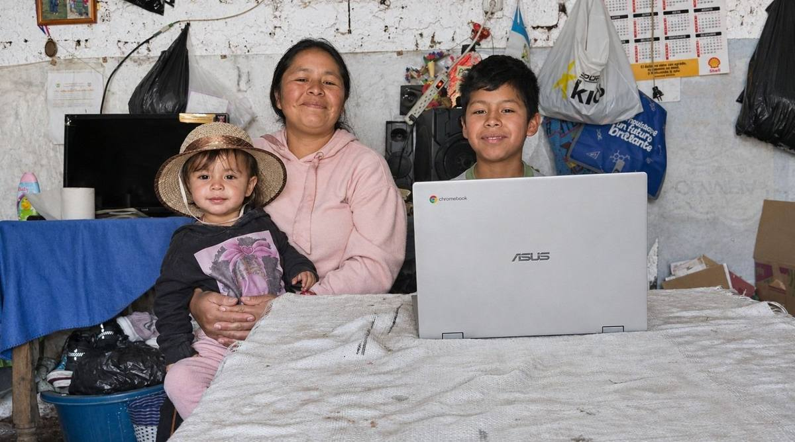

Etapa 1 → Etapa 2
Salitre de Conejo, Momostenango
Jonathan: una oportunidad que transforma vidas
Estando en cuarto primaria, durante la pandemia, avanzó por su cuenta con los videos de quinto y sexto.
Leer la historiaTotonicapán, Guatemala· acompañando a la niñez del altiplano por décadas

Una historia de perseverancia, integridad y oportunidades que transforman generaciones.
Cada día, entre telas, agujas y máquinas de coser, don Eric trabaja como sastre con un propósito que va mucho más allá de ganarse la vida: darles a sus cuatro hijos las oportunidades educativas que les permitan construir un futuro mejor.
A pesar de las limitaciones económicas y los desafíos que enfrenta su familia, nunca ha dejado de creer en el poder de la educación. Su esfuerzo, combinado con la perseverancia de sus hijos y el acompañamiento de GuateStar, ha dado frutos extraordinarios.
La historia comenzó en 2015, cuando su hija mayor, Yamilet, recibió una beca de GuateStar para cursar los tres años de educación básica. Aquella oportunidad fue el inicio de un camino que marcaría el futuro de toda la familia.

Licenciada en Psicología. Trabaja en una reconocida institución educativa de Quetzaltenango.
Cursa el segundo año de Ingeniería en Sistemas en la Universidad de San Carlos de Guatemala.
Se prepara para ser maestra de educación preprimaria.
Destaca en sus estudios y se prepara para cursar tercero básico.
Los cuatro hermanos han sido becados y participantes de Club Extra. Además de esforzarse por mantener sus calificaciones, demostrar responsabilidad y cultivar buenos valores, también han servido como voluntarios.
«Cuando una beca llega a las manos correctas, su impacto puede extenderse mucho más allá de un solo estudiante: puede transformar las oportunidades de toda una familia».GuateStar
Don Eric sigue trabajando como sastre, motivado por el deseo de ver a sus hijos alcanzar sus metas. Y ellos, a su vez, comparten un sueño: convertirse en profesionales y algún día retribuir a su padre todo el esfuerzo y sacrificio que ha hecho por ellos.
Detrás de los logros de estos cuatro jóvenes hay un padre que nunca dejó de trabajar, cuatro hijos que decidieron perseverar y donantes que creyeron en su potencial.
Con $30 al mes, un niño tiene un mes completo de Club Extra: refuerzo académico, mentoría y materiales.

Etapa 1 → Etapa 2
Salitre de Conejo, Momostenango
Estando en cuarto primaria, durante la pandemia, avanzó por su cuenta con los videos de quinto y sexto.
Leer la historia
Beca → Etapa 2
Familia y fe
Uno quiere ser dentista; el otro, chef de pizza. Hoy los dos sirven como voluntarios.
Leer la historia
Etapa 1
San Andrés Xecul
Se abrieron 20 lugares para sexto primaria y el primer sábado llegaron más de 40 niños.
Leer la historia